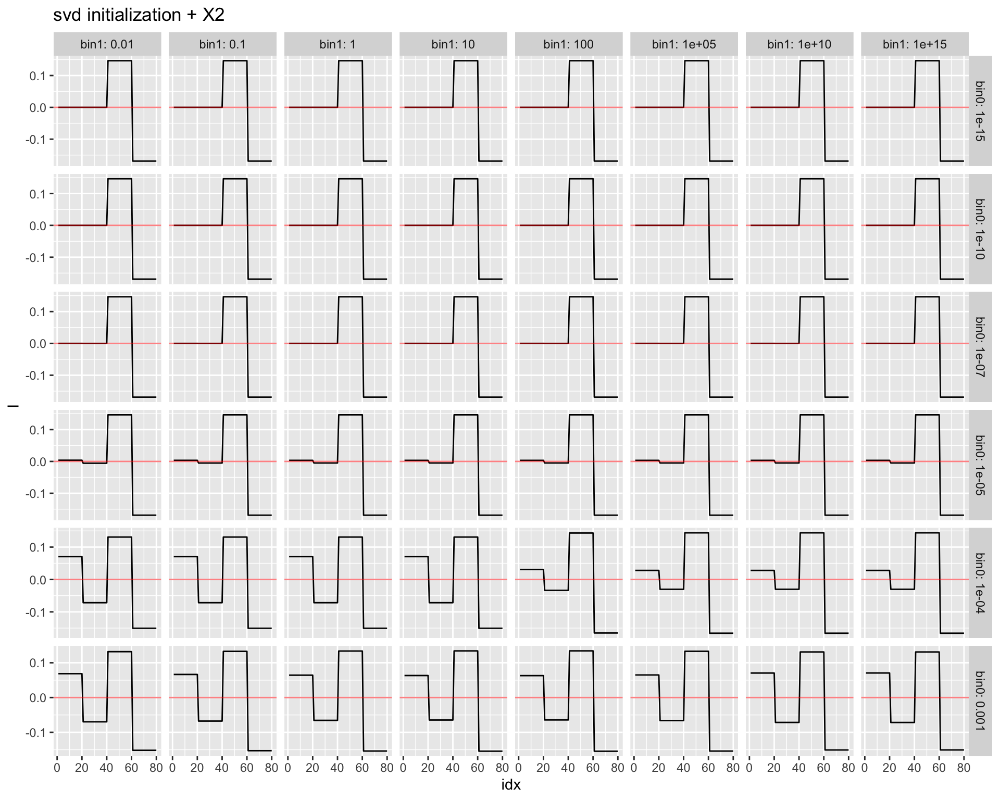
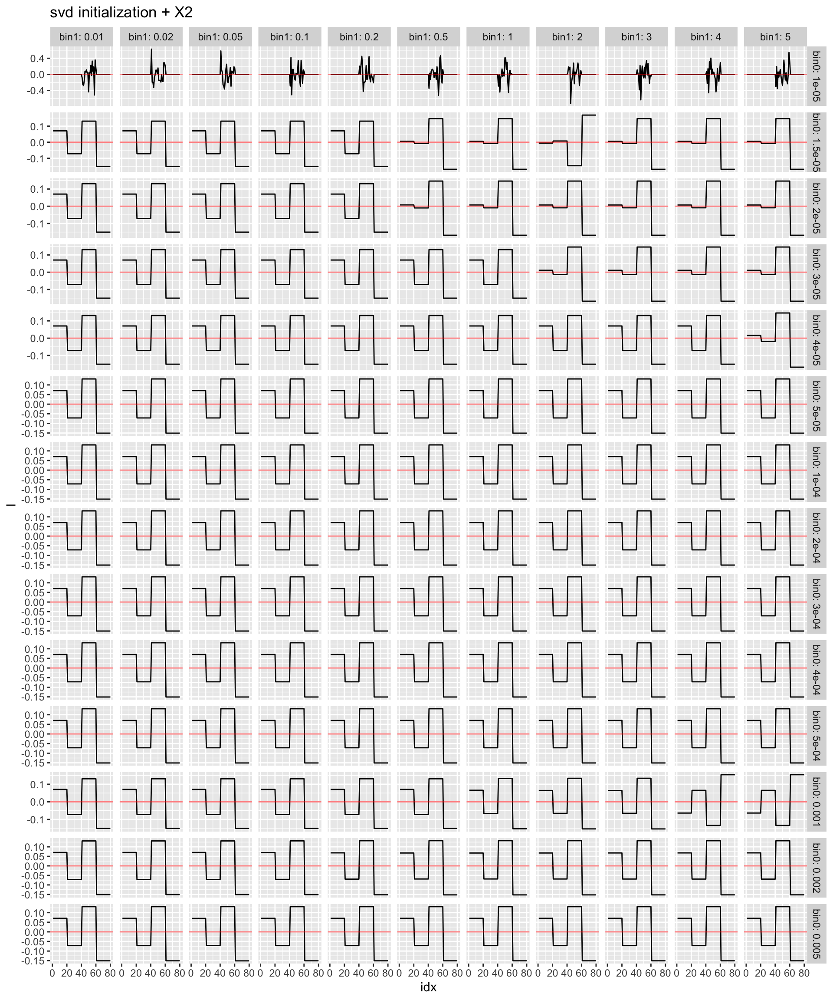
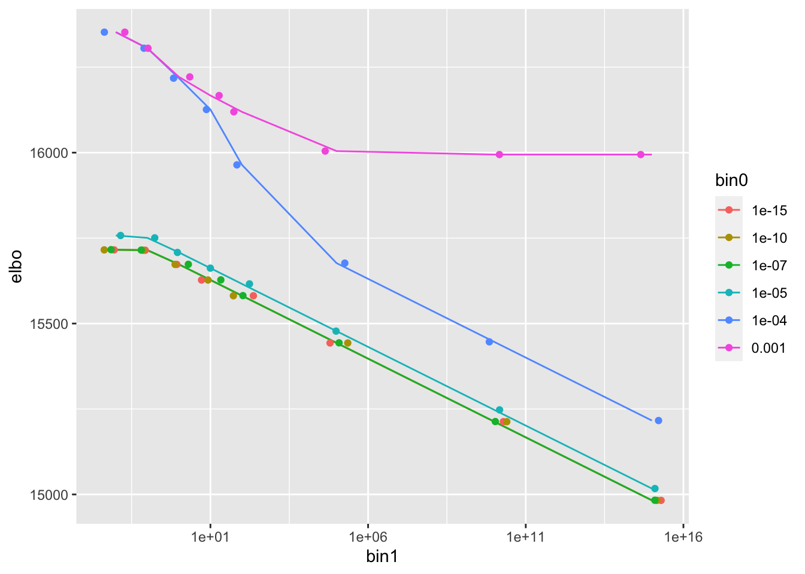
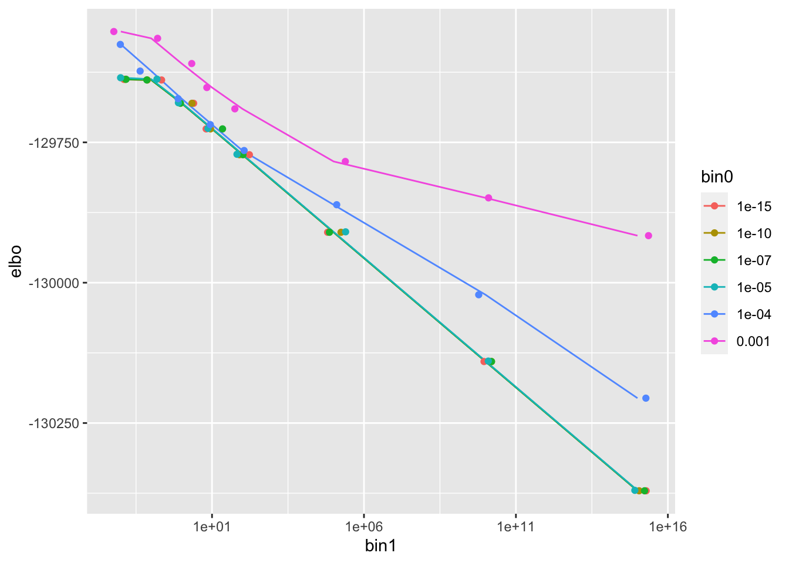
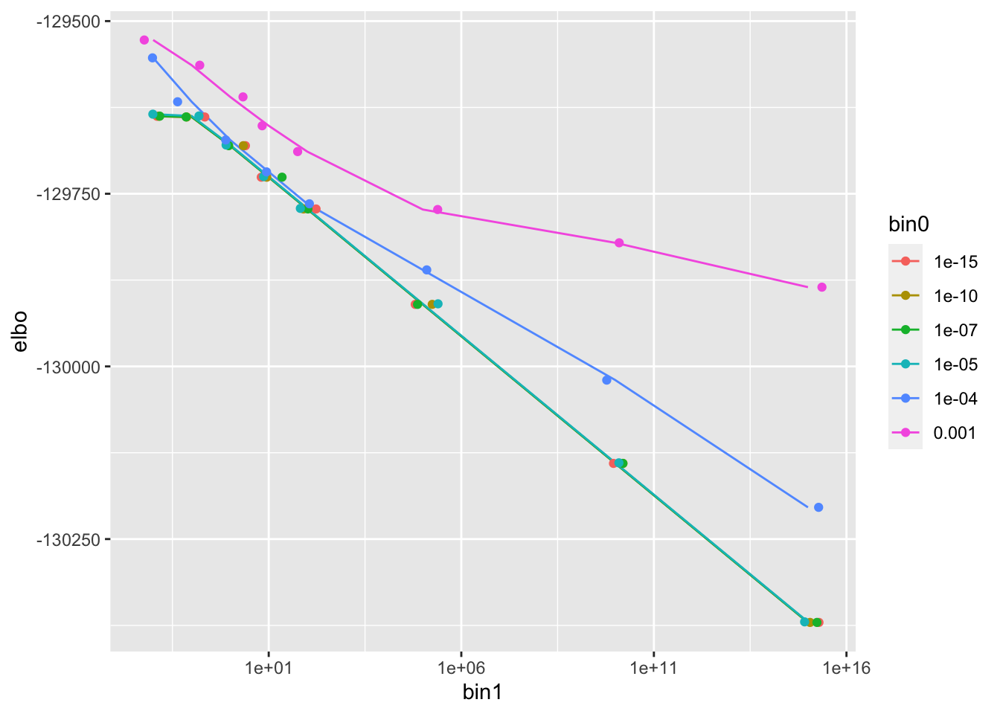
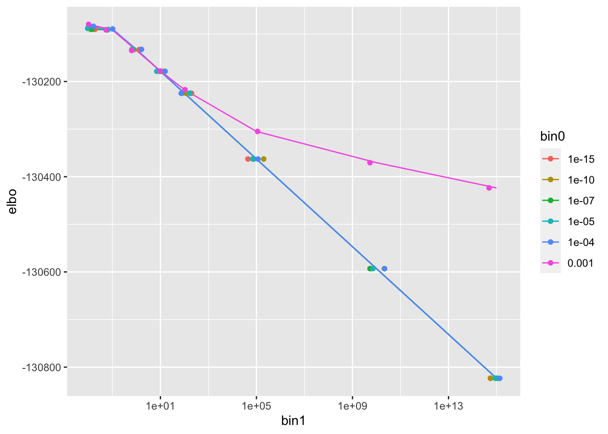
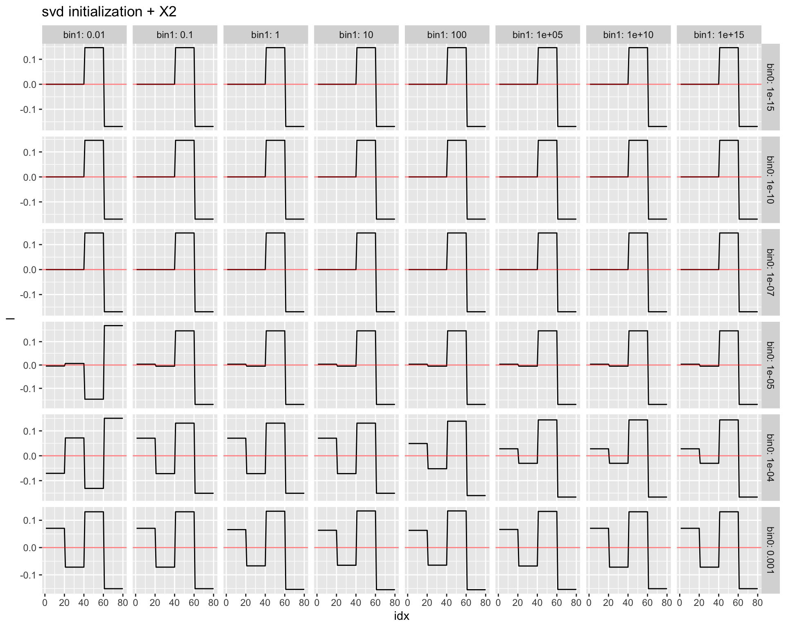

Last updated: 2020-11-05
Checks: 7 0
Knit directory: mf/
This reproducible R Markdown analysis was created with workflowr (version 1.6.2). The Checks tab describes the reproducibility checks that were applied when the results were created. The Past versions tab lists the development history.
Great! Since the R Markdown file has been committed to the Git repository, you know the exact version of the code that produced these results.
Great job! The global environment was empty. Objects defined in the global environment can affect the analysis in your R Markdown file in unknown ways. For reproduciblity it’s best to always run the code in an empty environment.
The command set.seed(20201010) was run prior to running the code in the R Markdown file. Setting a seed ensures that any results that rely on randomness, e.g. subsampling or permutations, are reproducible.
Great job! Recording the operating system, R version, and package versions is critical for reproducibility.
Nice! There were no cached chunks for this analysis, so you can be confident that you successfully produced the results during this run.
Great job! Using relative paths to the files within your workflowr project makes it easier to run your code on other machines.
Great! You are using Git for version control. Tracking code development and connecting the code version to the results is critical for reproducibility.
The results in this page were generated with repository version 0484638. See the Past versions tab to see a history of the changes made to the R Markdown and HTML files.
Note that you need to be careful to ensure that all relevant files for the analysis have been committed to Git prior to generating the results (you can use wflow_publish or wflow_git_commit). workflowr only checks the R Markdown file, but you know if there are other scripts or data files that it depends on. Below is the status of the Git repository when the results were generated:
Ignored files:
Ignored: .Rhistory
Ignored: .Rproj.user/
Ignored: analysis/.Rhistory
Untracked files:
Untracked: code/code_wflow_publish.R
Untracked: code/temp.R
Untracked: code/temp2.R
Untracked: output/Likelihood.gif
Untracked: writing/
Unstaged changes:
Deleted: analysis/ChoosingW.Rmd
Deleted: analysis/concentration.Rmd
Modified: analysis/index.Rmd
Note that any generated files, e.g. HTML, png, CSS, etc., are not included in this status report because it is ok for generated content to have uncommitted changes.
These are the previous versions of the repository in which changes were made to the R Markdown (analysis/demo2_toy.Rmd) and HTML (docs/demo2_toy.html) files. If you’ve configured a remote Git repository (see ?wflow_git_remote), click on the hyperlinks in the table below to view the files as they were in that past version.
| File | Version | Author | Date | Message |
|---|---|---|---|---|
| Rmd | 0484638 | Joonsuk Kang | 2020-11-05 | Integrate f out: demo2–sprase binary prior |
| html | 93d8894 | Joonsuk Kang | 2020-11-04 | Build site. |
| Rmd | 549c802 | Joonsuk Kang | 2020-11-04 | Integrate f out: demo2–sprase binary prior |
The prior is set as a sparse binary distribution: probability 0.5 at (a value close to zero) and (a large value). When given two points, e.g. \((\kappa_0, \kappa_1)=(10^{-15}, 10^{15})\), the prior distribution for w is set as the discrete probability distribution with probability mass 0.5 at each of the two points. The first singular vector of the data is used as the initialization of l and The initialization for w_i is set using a two-step procedure. First, set \(w_i=l_i^2\) using the initialization \(l_i\)’s. Second, if \(w_i\) is less than the median of \(\{w_i\}_{i=1}^n\), replace the value with \(\kappa_0\); otherwise, replace it with \(\kappa_1\). For details, refer to the function demo.init.svd below.
A grid of values \((\kappa_0, \kappa_1)\) are explored.
This shows that there exist settings in which the method works.
Minor fixes:
# code originally from https://stephens999.github.io/misc/tree_pca_03.html.
#--------------------------------------------------
# create X
set.seed(123)
p = 1000
n = 20
f = list()
for(i in 1:6){
f[[i]] = rnorm(p)
}
X =matrix(0,ncol=4*n, nrow=p)
X[,1:(2*n)] = f[[1]]
X[,(2*n+1):(4*n)] = f[[2]]
X[,1:n] = X[,1:n]+f[[3]]
X[,(n+1):(2*n)] = X[,(n+1):(2*n)]+f[[4]]
X[,(2*n+1):(3*n)] = X[,(2*n+1):(3*n)] + f[[5]]
X[,(3*n+1):(4*n)] = X[,(3*n+1):(4*n)] + f[[6]]
X.svd = svd(X)
# create X2
X2 = X- X.svd$u[,1:2] %*% diag(X.svd$d[1:2]) %*% t(X.svd$v[,1:2])
# adding noise
set.seed(9) # the seed where flash didn't work
X2n_a = X2 + rnorm(4*n*p,sd=3)
set.seed(5) # the seed where flash did work
X2n_b = X2 + rnorm(4*n*p,sd=3)
#--------------------------------------------------
# take transpose
X2 <- t(X2)
X2n_a <- t(X2n_a)
X2n_b <- t(X2n_b)
# svd
X2.svd = svd(X2)
X2n_a.svd = svd(X2n_a)
X2n_b.svd = svd(X2n_b)
rm(X)# initialization of l using svd
demo.init.svd <- function(mat.X, warmstart=FALSE, warmstart.l=NA,
grid.bin0, grid.bin1, prob.bin0){
N <- nrow(mat.X)
P <- ncol(mat.X)
mat.X.svd <- svd(mat.X)
init.l <- mat.X.svd$u[,1]
############### temporary functionality; overwrite init.l if given warmstart
if(warmstart==TRUE){ init.l <- warmstart.l }
###############
init.w <- init.l^2
init.sigmasq <- c((norm(mat.X, type='f')^2-t(init.l)%*%mat.X%*%t(mat.X)%*%init.l)/((N-1)*P))
init.delta <- c((t(init.l)%*%mat.X%*%t(mat.X)%*%init.l)/(P*init.sigmasq)-1)
# set the grid
grid.min <- grid.bin0
grid.max <- grid.bin1
sigmasq.grid <- c(grid.min, grid.max)
init.pi <- c(prob.bin0, 1-prob.bin0)
# change init.w: into two groups
init.w[init.w<quantile(init.w, prob.bin0)] <- grid.min
init.w[init.w>=quantile(init.w, prob.bin0)] <- grid.max
init.Ew.inv <- 1/init.w
out.list = list()
out.list$l <- init.l
out.list$w <- init.w
out.list$Ew.inv <- init.Ew.inv
out.list$sigmasq <- init.sigmasq
out.list$delta <- init.delta
out.list$pi <- init.pi
out.list$sigmasq.grid <- sigmasq.grid
return(out.list)
}# leg A: given w, update l (essentially, Sigma.star), sigmasq, delta
demo.update.A <- function(mat.X, sigmasq, delta, Ew.inv){
# input: mat.X; sigmasq, delta, Ew.inv,
# output: Sigma.star, Elsq, Elxxl; updated sigmasq, delta; u1 (first left singular vector of Y)
N <- nrow(mat.X)
P <- ncol(mat.X)
Y <- mat.X%*%t(mat.X)/(sigmasq*(1+1/delta)) - diag(x=Ew.inv)
Y.eigen <- eigen(Y)
eval.expectation <- function(k){(sum(1/(k/(sigmasq*(1+1/delta))-Y.eigen$values))-1)^2}
find.k.star <- optimize(f=eval.expectation,
interval = c((Y.eigen$values[1]+1)*sigmasq*(1+1/delta), (Y.eigen$values[1]+N)*sigmasq*(1+1/delta))
)
k.star <- find.k.star$minimum
d.tilde <- 1/(k.star/(sigmasq*(1+1/delta))-Y.eigen$values)
Sigma.star <- Y.eigen$vectors %*% diag(x=d.tilde) %*% t(Y.eigen$vectors)
log.det.Sigma.star <- sum(log(d.tilde))
Elsq <- diag(Sigma.star)
ElXXl <- sum(diag((t(mat.X) %*% Sigma.star %*% mat.X)))
sigmasq <- (norm(mat.X, type='f')^2-ElXXl/(1+1/delta))/(N*P)
delta <- max(ElXXl/(P*sigmasq)-1,10^(-10)) # lower bound at 10^(-10)
out.list = list()
out.list$log.det.Sigma.star = log.det.Sigma.star
out.list$Sigma.star = Sigma.star
out.list$Elsq = Elsq
out.list$ElXXl = ElXXl
out.list$sigmasq = sigmasq
out.list$delta = delta
out.list$u1 = Y.eigen$vectors[,1]
return(out.list)
}
# leg B: update w (essentially, pi_q) and g (essentially, Ew.inv)
demo.update.B <- function(mat.X, Elsq, pi, sigmasq.grid, niter.wg = 10){
# input: Elsq, pi; sigmasq.grid, niter.wg
# output: pi, pi_q Ew.inv
N <- nrow(mat.X)
P <- ncol(mat.X)
for (wg.iter in 1:niter.wg){ # more than one iteration helps
pi_q <- matrix(data=0, nrow=N, ncol=length(sigmasq.grid))
for (i in 1:N){
pi_q[i,] <- pi*sigmasq.grid^(-0.5)*exp(-Elsq[i]/(2*sigmasq.grid))
pi_q[i,] <- pi_q[i,]/sum(pi_q[i,])
}
pi <- colSums(pi_q)/N
}
Ew.inv <- vector(mode='numeric', length=N)
for (i in 1:N){
Ew.inv[i] <- sum(pi_q[i,]*(1/sigmasq.grid))
}
out.list = list()
out.list$pi = pi
out.list$pi_q = pi_q
out.list$Ew.inv = Ew.inv
return(out.list)
}
demo.elbo <- function(mat.X, N,P,
sigmasq, delta,
log.det.Sigma.star, ElXXl, Elsq,
pi, pi_q,
sigmasq.grid,
Ew.inv
){
logpi <- log(pi)
logpi[pi==0] <- 0 # to exclude -Inf (where pi=0) in the sum
elbo <- -N*P*log(sigmasq)/2-P*log(1+delta)/2-norm(mat.X,'f')^2/(2*sigmasq)+ElXXl/(2*sigmasq*(1+1/delta))+
log.det.Sigma.star/2-sum(log(pi_q)*pi_q, na.rm=TRUE)-sum(pi_q %*% log(sigmasq.grid))/2-sum(Elsq*Ew.inv)/2+
sum(pi_q %*% logpi)
return(elbo)
}demo.fit <- function(mat.X, niter, print.elbo=TRUE, warmstart.l=NA,
binary_small=10^(-15), binary_big=10^15, prob_small=0.5 # (prob_big=1-prob_small)
){
N <- nrow(mat.X)
P <- ncol(mat.X)
par.init <- demo.init.svd(mat.X,
grid.bin0=binary_small, grid.bin1=binary_big,
prob.bin0=prob_small)
l <- par.init$l
w <- par.init$w
Ew.inv <- par.init$Ew.inv
sigmasq <- par.init$sigmasq
delta <- par.init$delta
pi <- par.init$pi
sigmasq.grid <- par.init$sigmasq.grid
elbo <- vector('numeric',length=niter)
for (i in 1:niter){
# leg A
temp.A <- demo.update.A(mat.X,
sigmasq=sigmasq,
delta=delta,
Ew.inv=Ew.inv)
Sigma.star <- temp.A$Sigma.star
log.det.Sigma.star <- temp.A$log.det.Sigma.star
Elsq <- temp.A$Elsq
ElXXl <- temp.A$ElXXl
sigmasq <- temp.A$sigmasq
delta <- temp.A$delta
# leg B
temp.B <- demo.update.B(mat.X,
Elsq=Elsq,
pi=pi,
sigmasq.grid=sigmasq.grid)
pi <- temp.B$pi
pi_q <- temp.B$pi_q
Ew.inv <- temp.B$Ew.inv
# elbo
elbo[i] <- demo.elbo(mat.X,N,P,
sigmasq, delta,
log.det.Sigma.star, ElXXl, Elsq,
pi, pi_q,
sigmasq.grid,
Ew.inv
)
if(print.elbo==TRUE){print(elbo[i])}
}
out.list = list()
out.list$log.det.Sigma.star <- log.det.Sigma.star
out.list$Sigma.star <- Sigma.star
out.list$Elsq <- Elsq
out.list$ElXXl <- ElXXl
out.list$sigmasq <- sigmasq
out.list$delta <- delta
out.list$pi <- pi
out.list$pi_q <- pi_q
out.list$Ew.inv <- Ew.inv
out.list$u1 <- temp.A$u1
out.list$sigmasq.grid <- sigmasq.grid
out.list$elbo <- elbo
return(out.list)
}library(tidyverse)── Attaching packages ────────────────────────────────────────────────────────────────────────────────── tidyverse 1.3.0 ──✓ ggplot2 3.3.2 ✓ purrr 0.3.4
✓ tibble 3.0.3 ✓ dplyr 1.0.2
✓ tidyr 1.1.2 ✓ stringr 1.4.0
✓ readr 1.4.0 ✓ forcats 0.5.0── Conflicts ───────────────────────────────────────────────────────────────────────────────────── tidyverse_conflicts() ──
x dplyr::filter() masks stats::filter()
x dplyr::lag() masks stats::lag()library(flashr)# flash fit: restricted to rank-1
X2.flash1 = flashr::flash(X2,1,ebnm_fn = list(l="ebnm_pn", f="ebnm_ash"),var_type = "constant", verbose=FALSE)
X2n_a.flash1 = flashr::flash(X2n_a,1,ebnm_fn = list(l="ebnm_pn", f="ebnm_ash"),var_type = "constant", verbose=FALSE)
X2n_b.flash1 = flashr::flash(X2n_b,1,ebnm_fn = list(l="ebnm_pn", f="ebnm_ash"),var_type = "constant", verbose=FALSE)Warning in verbose_obj_decrease_warning(): An iteration decreased the objective.
This happens occasionally, perhaps due to numeric reasons. You could ignore this
warning, but you might like to check out https://github.com/stephenslab/flashr/
issues/26 for more details.data.frame(idx = 1:80,
l = c(X2.svd$u[,1],
X2n_a.svd$u[,1],
X2n_b.svd$u[,1],
X2.flash1$ldf$l[,1],
X2n_a.flash1$ldf$l[,1],
X2n_b.flash1$ldf$l[,1]),
data = rep(rep(c("X2", "X2n_a (hard)", "X2n_b (easy)"), each=80), times=2),
method = rep(c("svd", "flash"), each=80*3)
) %>%
# adjust sign for illustration
mutate(l = ifelse((data=="X2n_b (easy)" & method=="flash"),
-l,
l)
) -> X2.fit1
# warmstart: sparse fit (from X2n_b) initialization for flash on data X2
X2.flash.warmstart1 = flashr::flash(X2,K=1,f_init=X2n_b.flash1,ebnm_fn = list(l="ebnm_pn", f="ebnm_ash"),var_type = "constant",backfit = TRUE,greedy = FALSE, verbose=FALSE)
data.frame(idx=1:80,
l = c(X2.flash.warmstart1$ldf$l[,1]), data="X2", method="flash_warm") %>%
rbind(X2.fit1) -> X2.fit1
X2.fit1 %>%
ggplot()+geom_line(aes(x=idx, y=l, group=method, col=method))+
facet_grid(method~data, labeller=label_both)+geom_hline(yintercept=0)+
ggtitle("The Rank-1 Problem")
| Version | Author | Date |
|---|---|---|
| 93d8894 | Joonsuk Kang | 2020-11-04 |
X2# sparse binary prior: =bin0 wp 0.5 and =bin1 wp 0.5
summary((X2.svd$u[,1])^2) Min. 1st Qu. Median Mean 3rd Qu. Max.
0.004986 0.005103 0.011159 0.012500 0.018556 0.022695 # bin0: essentially 0
# bin1: a large value
niter <- 5
bin0.grid <- 10^c(-15,-10,-7,-5,-4,-3)
bin1.grid <- 10^c(-2,-1,0,1,2,5,10,15)
df.result <- data.frame()
df.elbo <-data.frame()
for (i in 1:length(bin0.grid)){
for (j in 1:length(bin1.grid)){
bin0 <- bin0.grid[i]
bin1 <- bin1.grid[j]
X2.fit <- demo.fit(X2, niter=niter, print.elbo=FALSE, binary_small=bin0, binary_big=bin1)
df.result <- rbind(df.result,
data.frame(l=X2.fit$u1,
idx=1:80, bin0 = bin0, bin1=bin1, data="X2"))
df.elbo <- rbind(df.elbo,
data.frame(elbo=c(last(X2.fit$elbo)),
data=c("X2"),
bin0=bin0, bin1=bin1))
}
}
df.result %>% mutate(bin0=factor(bin0), bin1=factor(bin1)) -> df.result
df.elbo %>% mutate(bin0=factor(bin0)) -> df.elbo
df.result %>% filter(data=="X2") %>%
ggplot()+geom_line(aes(x=idx, y=l))+geom_hline(yintercept=0, col='red', alpha=0.5)+
facet_grid(bin0~bin1, labeller='label_both', scales='free')+ggtitle("svd initialization + X2")
| Version | Author | Date |
|---|---|---|
| 93d8894 | Joonsuk Kang | 2020-11-04 |
df.elbo %>% filter(data=="X2") %>%
ggplot(aes(x=bin1, y=elbo, group=bin0, col=bin0))+geom_line()+geom_point(position="jitter")+scale_x_log10()
X2n_a (hard) and X2n_b (easy)# sparse binary prior: =bin0 wp 0.5 and =bin1 wp 0.5
summary((X2n_a.svd$u[,1])^2) Min. 1st Qu. Median Mean 3rd Qu. Max.
0.001411 0.006873 0.012183 0.012500 0.016770 0.027912 summary((X2n_b.svd$u[,1])^2) Min. 1st Qu. Median Mean 3rd Qu. Max.
1.250e-06 3.819e-04 6.484e-03 1.250e-02 2.277e-02 4.602e-02 # bin0: essentially 0
# bin1: a large value
niter <- 5
bin0.grid <- 10^c(-15,-10,-7,-5,-4,-3)
bin1.grid <- 10^c(-2,-1,0,1,2,5,10,15)
df.result <- data.frame()
df.elbo <-data.frame()
for (i in 1:length(bin0.grid)){
for (j in 1:length(bin1.grid)){
bin0 <- bin0.grid[i]
bin1 <- bin1.grid[j]
X2n_a.fit <- demo.fit(X2n_a, niter=niter, print.elbo=FALSE, binary_small=bin0, binary_big=bin1)
X2n_b.fit <- demo.fit(X2n_b, niter=niter, print.elbo=FALSE, binary_small=bin0, binary_big=bin1)
df.result <- rbind(df.result,
data.frame(l=X2n_a.fit$u1,
idx=1:80, bin0 = bin0, bin1=bin1, data="X2n_a (hard)"),
data.frame(l=X2n_b.fit$u1,
idx=1:80, bin0 = bin0, bin1=bin1, data="X2n_b (easy)"))
df.elbo <- rbind(df.elbo,
data.frame(elbo=c(last(X2n_a.fit$elbo), last(X2n_b.fit$elbo)),
data=c("X2n_a (hard)", "X2n_b (easy)"),
bin0=bin0, bin1=bin1))
}
}
df.result %>% mutate(bin0=factor(bin0), bin1=factor(bin1)) -> df.result
df.elbo %>% mutate(bin0=factor(bin0)) -> df.elbo
df.result %>% filter(data=="X2n_a (hard)") %>%
ggplot()+geom_line(aes(x=idx, y=l))+geom_hline(yintercept=0, col='red', alpha=0.5)+
facet_grid(bin0~bin1, labeller='label_both', scales='free')+ggtitle("svd initialization + X2n_a (hard)")
df.elbo %>% filter(data=="X2n_a (hard)") %>%
ggplot(aes(x=bin1, y=elbo, group=bin0, col=bin0))+geom_line()+geom_point(position="jitter")+scale_x_log10()
df.result %>% filter(data=="X2n_b (easy)") %>%
ggplot()+geom_line(aes(x=idx, y=l))+geom_hline(yintercept=0, col='red', alpha=0.5)+
facet_grid(bin0~bin1, labeller='label_both', scales='free')+ggtitle("svd initialization + X2n_b (easy)")
df.elbo %>% filter(data=="X2n_b (easy)") %>%
ggplot(aes(x=bin1, y=elbo, group=bin0, col=bin0))+geom_line()+geom_point(position="jitter")+scale_x_log10()
sessionInfo()R version 4.0.2 (2020-06-22)
Platform: x86_64-apple-darwin17.0 (64-bit)
Running under: macOS Catalina 10.15.7
Matrix products: default
BLAS: /Library/Frameworks/R.framework/Versions/4.0/Resources/lib/libRblas.dylib
LAPACK: /Library/Frameworks/R.framework/Versions/4.0/Resources/lib/libRlapack.dylib
locale:
[1] en_US.UTF-8/en_US.UTF-8/en_US.UTF-8/C/en_US.UTF-8/en_US.UTF-8
attached base packages:
[1] stats graphics grDevices utils datasets methods base
other attached packages:
[1] flashr_0.6-7 forcats_0.5.0 stringr_1.4.0 dplyr_1.0.2
[5] purrr_0.3.4 readr_1.4.0 tidyr_1.1.2 tibble_3.0.3
[9] ggplot2_3.3.2 tidyverse_1.3.0 workflowr_1.6.2
loaded via a namespace (and not attached):
[1] httr_1.4.2 jsonlite_1.7.1 modelr_0.1.8 assertthat_0.2.1
[5] mixsqp_0.3-43 blob_1.2.1 cellranger_1.1.0 yaml_2.2.1
[9] ebnm_0.1-24 pillar_1.4.6 backports_1.1.10 lattice_0.20-41
[13] glue_1.4.2 digest_0.6.25 promises_1.1.1 rvest_0.3.6
[17] colorspace_1.4-1 htmltools_0.5.0 httpuv_1.5.4 Matrix_1.2-18
[21] plyr_1.8.6 pkgconfig_2.0.3 invgamma_1.1 broom_0.7.1
[25] haven_2.3.1 scales_1.1.1 whisker_0.4 later_1.1.0.1
[29] git2r_0.27.1 generics_0.0.2 farver_2.0.3 ellipsis_0.3.1
[33] withr_2.3.0 ashr_2.2-47 cli_2.0.2 magrittr_1.5
[37] crayon_1.3.4 readxl_1.3.1 evaluate_0.14 fs_1.5.0
[41] fansi_0.4.1 xml2_1.3.2 truncnorm_1.0-8 tools_4.0.2
[45] hms_0.5.3 softImpute_1.4 lifecycle_0.2.0 munsell_0.5.0
[49] reprex_0.3.0 irlba_2.3.3 compiler_4.0.2 rlang_0.4.7
[53] grid_4.0.2 rstudioapi_0.11 labeling_0.3 rmarkdown_2.4
[57] gtable_0.3.0 DBI_1.1.0 reshape2_1.4.4 R6_2.4.1
[61] lubridate_1.7.9 knitr_1.30 rprojroot_1.3-2 stringi_1.5.3
[65] SQUAREM_2020.4 Rcpp_1.0.5 vctrs_0.3.4 dbplyr_1.4.4
[69] tidyselect_1.1.0 xfun_0.18